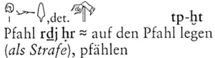
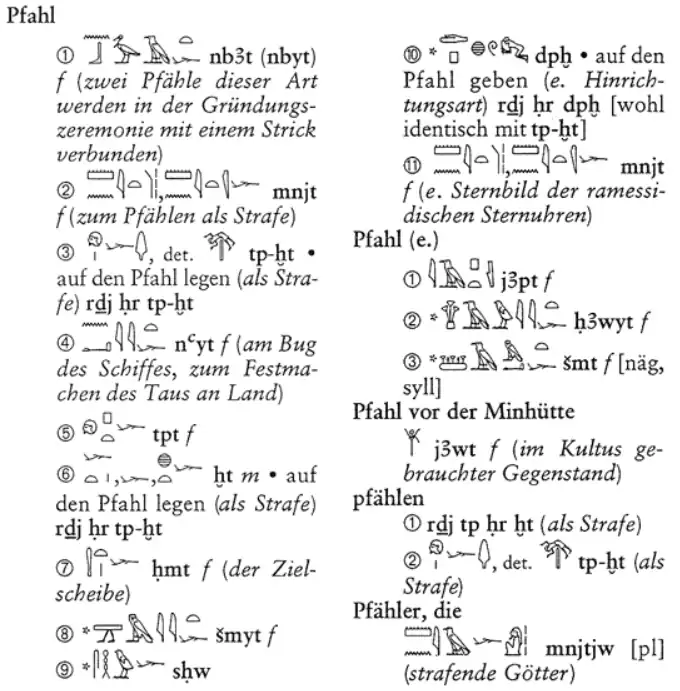
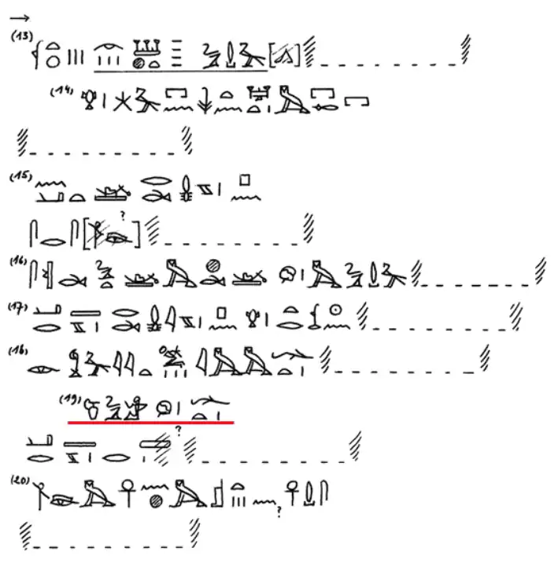

Quran 20:71 says Pharaoh threatened to crucify on "trunks of palm trees." What does this tell us about Egyptian crucifixion?
What is the difference between the cross everyone imagines and what the Quran and archaeology actually describe?


What is Papyrus Boulaq 18 and why does it matter to this discovery?
